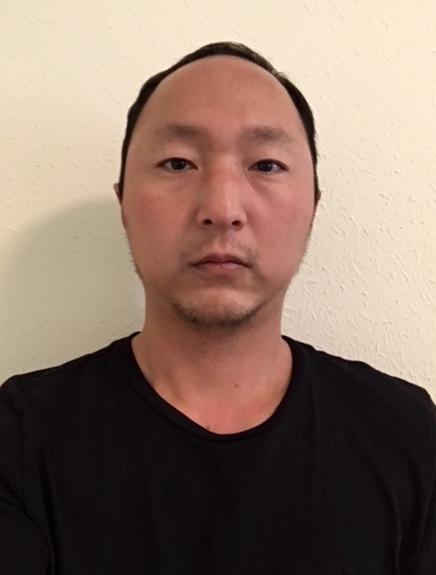

About Me
It may comfort you to know that Fry's death took only fifteen seconds, yet the pain was so intense, that it felt to him like fifteen years. And it goes without saying, it caused him to empty his bowels. Now, now. Perfectly symmetrical violence never solved anything. Daylight and everything. Well, then good news! It's a suppository. As an interesting side note, as a head without a body, I envy the dead. Shut up and get to the point! You won't have time for sleeping, soldier, not with all the bed making you'll be doing. We'll go deliver this crate like professionals, and then we'll go home. Is the Space Pope reptilian!? Bender, quit destroying the universe!
Kids don't turn rotten just from watching TV. Michelle, I don't regret this, but I both rue and lament it. Soothe us with sweet lies. Leela, are you alright? You got wanged on the head. Incidentally, you have a dime up your nose. Oh right. I forgot about the battle. I had more, but you go ahead. I just want to talk. It has nothing to do with mating. Fry, that doesn't make sense. Yes, if you make it look like an electrical fire. When you do things right, people won't be sure you've done anything at all. Hey, you add a one and two zeros to that or we walk! Hello Morbo, how's the family? Is that a cooking show? Really?! Fry! Stay back! He's too powerful! THE BIG BRAIN AM WINNING AGAIN! I AM THE GREETEST! NOW I AM LEAVING EARTH, FOR NO RAISEN!
Connect with Me